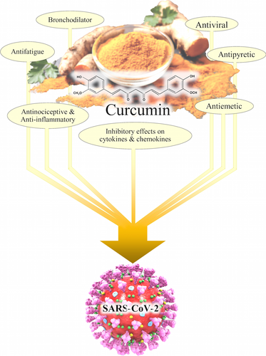

The Pre-Bar Bar
The Pre-Bar Bar is a granola based bar that helps to prevent a hangover. Eaten before or while you drink, the special ingredients in the bar help combat some of the toxins from alcohol that make you feel terrible in the morning. Started in Gainesville, FL and expanding to major college towns like Madison, WI, Southbend, IN, and Boulder, CO, the pre-bar bar is a delicious way to start your night off right, and start your next day off strong.
How does it work?
The first excellent resource to explain how the Pre-Bar Bar works is this video from What I've Learned. The video is about 7 minutes long, references specific studies, and provides a summary of the science behind the bar.For those that don't want to watch, thats ok! There are two important ingredients in the Pre-Bar Bar that make it successful in preventing your hangover. These are turmeric and pepper. Turmeric contains within it something called curcumin, and this is what really does the heavy lifting in helping with your hangover. The pepper is what allows that curcumin to get where it needs to go in your body, it increases the bio-availability of the curcumin. Acetaldehyde is a chemical that your body makes when it breaks down alcohol, and is actually 10-30 times more toxic than alcohol itself. The levels of acetaldehyde are shown to drop when curcumin is available in your body. The issue is that curcumin is not absorbed very well by your liver. This is where pepper comes in, a compound in pepper called piperine increases the bio-availability of curcumin by 2000%. Together these two compounds are what break down acetaldehyde and help lessen the chances of you having a hangover.
Ingredients
The Pre-Bar Bar is a perfect blend of all natural granola, almonds, honey, turmeric, pepper, brown suger, and a touch of olive oil. For our peanut butter par, organic peanut butter is used, and dried fruit is used in our cherry and blueberry flavors.Additional Benefits
As mentioned in the video, curcumin and by extension turmeric is an increadibly powerful anti-inflammatory compound. This means that the Pre-Bar Bar has some health benefits outside just helping to prevent your hangover! A study from 2014 stated "Neuroinflammation is central to the common pathology of several acute and chronic brain diseases" (1). Other studies suggest connections between parkinson's disease (2) and alzheimers (3) and neuroinflammation. Another source suggests "Mounting evidence is suggesting that the onset of mental illness might be due more to the presence of inflammation of the brain than just being a random or spontaneous condition" (4). Lastly, while no trails or testing have been done, many have speculated that curcumin can be an effecive tool against COVID-19 (5). The paper concering COVID-19 is very technical, but it will be referenced below for those interested. Below is a figure from the aforementioned paper regarding COVID-19. This is not to say that turmeric or the Pre-Bar Bar is a miracle substance, but rather there are many benefits an anti-inflammatory can offer on top of reducing your chances of getting a hangover.